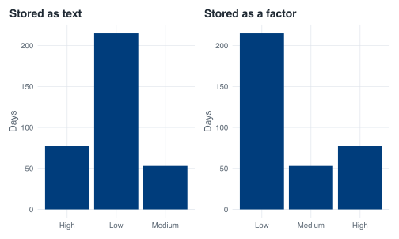

covid <- read_covid() %>%
arrange(date) %>%
mutate(daily_cases = confirmed - lag(confirmed, default = 0))
covid %>%
select(date, confirmed, daily_cases) %>%
slice(85:90)
#> # A tibble: 6 × 3
#> date confirmed daily_cases
#> <date> <dbl> <dbl>
#> 1 2020-04-15 3699 447
#> 2 2020-04-16 4427 728
#> 3 2020-04-17 5050 623
#> 4 2020-04-18 5992 942
#> 5 2020-04-19 6588 596
#> 6 2020-04-20 8014 14268 Making decisions
Nobody reading a surveillance report sees “1,426” and thinks “1,426”. They think “bad day”. Most of what routine epidemiological reporting does is turn numbers into labels, and R hands you two entirely different tools for the job. One of them decides what your script does next. The other decides what goes in a column. Beginners reach for the first when they need the second roughly every time, and the result is either a red error or, worse, an answer that is correct for one row and quietly wrong for the other 344.
This chapter sorts out which is which, and then builds the column the rest of the book leans on: a severity label for every day of 2020.
8.1 Where we are
Everything here starts from the daily counts you built in the previous chapter. The file ships cumulative totals, so a day’s new cases is today’s total minus yesterday’s, and lag(confirmed, default = 0) supplies the “yesterday” for the very first row. That default matters: confirmed is 0 on 22 January, so day one had a real zero of new cases, not a missing one.
8.2 if asks exactly one question
R’s if is a control-flow statement. It looks at a single TRUE or FALSE and picks which block of code to run. It is the right tool when you are deciding something about your analysis as a whole.
worst <- max(covid$daily_cases)
worst
#> [1] 1426
if (worst > 1000) {
"Singapore recorded a four-figure day."
} else {
"No day reached a thousand."
}
#> [1] "Singapore recorded a four-figure day."worst is one number. worst > 1000 is one TRUE. if is happy.
Now the mistake. Suppose you want a label on every row, and you write the thing that reads like English:
if (covid$daily_cases > 300) "High" else "Not high"
#> Error in `if (covid$daily_cases > 300) ...`:
#> ! the condition has length > 1covid$daily_cases > 300 is not one TRUE. It is 345 of them.
length(covid$daily_cases > 300)
#> [1] 345if has no way to act on 345 answers at once, so it refuses. The message to search for is the condition has length > 1.
This error is newer than you might expect. Up to R 4.1, that same code ran: R warned you, silently took the first element, and carried on. A script could label the entire dataset “Not high” because 22 January happened to have zero cases, and the only sign of trouble was a warning most people scroll past. R 4.2 promoted it to an error. If you find an old script or a Stack Overflow answer that relies on the old behaviour, that is why it no longer works, and the change was an improvement.
When you do want a whole-dataset question, collapse the vector to one value first. any() and all() are built for this.
if (any(covid$daily_cases > 1000)) {
"At least one day topped a thousand."
}
#> [1] "At least one day topped a thousand."
8.3 if_else() builds a column
For a label on every row you want a vectorised choice: one input vector in, one output vector out, same length. dplyr’s if_else() does that.
covid %>%
mutate(big_day = if_else(daily_cases > 300, "High", "Not high")) %>%
count(big_day)
#> # A tibble: 2 × 2
#> big_day n
#> <chr> <int>
#> 1 High 77
#> 2 Not high 268Read the arguments as a sentence: for each row, test daily_cases > 300; where it is TRUE use "High", where it is FALSE use "Not high".
if_else() is fussy about types, and the fussiness is deliberate:
covid %>%
mutate(big_day = if_else(daily_cases > 300, "High", 0))
#> Error in `mutate()` at magrittr/R/pipe.R:136:3:
#> ℹ In argument: `big_day = if_else(daily_cases > 300, "High", 0)`.
#> Caused by error in `if_else()`:
#> ! Can't combine `true` <character> and `false` <double>.Can’t combine true false ifelse() will guess, and its guesses are how people lose data. Watch what happens to a date column:
Those five-digit numbers are days since 1 January 1970, which is how R stores a Date underneath. ifelse() stripped the class and handed back the raw integers. Somebody has spent an evening trying to work out why their outbreak started in 1970.
if_else(big$daily_cases > 300, big$date, as.Date(NA))
#> [1] "2020-04-13" "2020-04-14" "2020-04-15"Same question, dates intact. Use if_else().
8.4 case_when() when there are more than two answers
Two labels is one test. Three labels needs two tests, and nesting if_else() inside if_else() inside if_else() produces code nobody can read six months later. case_when() replaces the nesting with a list of conditions, each paired with the value to use when it matches.
The cutoffs the course uses: under 100 new cases is Low, 100 up to and including 300 is Medium, over 300 is High.
covid <- covid %>%
mutate(
severity = case_when(
daily_cases < 100 ~ "Low",
daily_cases <= 300 ~ "Medium",
daily_cases > 300 ~ "High"
)
)
covid %>% count(severity)
#> # A tibble: 3 × 2
#> severity n
#> <chr> <int>
#> 1 High 77
#> 2 Low 215
#> 3 Medium 53The ~ separates the test from the result. You will meet that squiggle again in formulas and in ggplot facets; here it means “gives”.
case_when() works top to bottom and first match wins. Once a row matches a line, later lines never see it. That is what lets the second condition be daily_cases <= 300 and not daily_cases >= 100 & daily_cases <= 300: any row still being tested on line two already failed line one, so it already has at least 100 cases.
Which also means the order is load-bearing. Swap the first two lines and the arithmetic is identical but the answer is not:
covid %>%
mutate(
wrong = case_when(
daily_cases <= 300 ~ "Medium",
daily_cases < 100 ~ "Low",
daily_cases > 300 ~ "High"
)
) %>%
count(wrong)
#> # A tibble: 2 × 2
#> wrong n
#> <chr> <int>
#> 1 High 77
#> 2 Medium 268Every Low day matched “Medium” on the way past and never reached its own line. No error, no warning, 215 days mislabelled. When a case_when() gives you a category with a suspiciously round zero or a suspiciously large count, read the order before you read anything else.
The other failure mode is a row that matches nothing at all. Drop the last line and the 77 High days have nowhere to go:
covid %>%
mutate(
incomplete = case_when(
daily_cases < 100 ~ "Low",
daily_cases <= 300 ~ "Medium"
)
) %>%
count(incomplete)
#> # A tibble: 3 × 2
#> incomplete n
#> <chr> <int>
#> 1 Low 215
#> 2 Medium 53
#> 3 <NA> 77case_when() returns NA for unmatched rows rather than complaining, so this only shows up if you look. .default catches everything that falls through and is worth using whenever your conditions are meant to be exhaustive:
covid %>%
mutate(
severity_alt = case_when(
daily_cases < 100 ~ "Low",
daily_cases <= 300 ~ "Medium",
.default = "High"
)
) %>%
count(severity_alt)
#> # A tibble: 3 × 2
#> severity_alt n
#> <chr> <int>
#> 1 High 77
#> 2 Low 215
#> 3 Medium 538.5 The boundaries are real days
“100 to 300” is ambiguous in English and unambiguous in code, which is exactly where specifications go wrong. Is a day with exactly 100 cases Low or Medium? Is 300 Medium or High? Somebody has to decide, and in a real outbreak that somebody is you, at half past five, on the phone.
This dataset contains days sitting on both ends of the rule.
Predict before you run
Two days in August: 18 August had exactly 100 new cases, and 6 August had 301. Under the cutoffs written above, write down the label each of them gets before you look. If you are not sure, that is the point of the exercise.
18 August is Medium because daily_cases < 100 is FALSE at exactly 100, so it fell through to the <= 300 line. 6 August is High because 301 is one case past <= 300. Change < to <= on the first line and 18 August becomes Low. One character, one day, and if that day is the one in the headline you will hear about it.
Write your thresholds down in prose next to the code, with the inequalities spelled out. “Fewer than 100” and “up to 100” are different rules and they will disagree on real days.
8.6 Missing values fall straight through
Neither if_else() nor case_when() treats NA as FALSE. NA > 0 is NA, which is neither branch, so the result is NA. Deaths in this file are missing for the first 59 days, so they show it plainly:
covid %>%
mutate(
daily_deaths = deaths - lag(deaths, default = 0),
death_day = if_else(daily_deaths > 0, "yes", "no")
) %>%
count(death_day)
#> # A tibble: 3 × 2
#> death_day n
#> <chr> <int>
#> 1 no 260
#> 2 yes 25
#> 3 <NA> 60Sixty rows came back NA: the 59 days before any death total was published, plus the first day that had one, which has no valid predecessor to difference against. if_else() gives you a missing = argument to label them explicitly:
covid %>%
mutate(
daily_deaths = deaths - lag(deaths, default = 0),
death_day = if_else(daily_deaths > 0, "yes", "no", missing = "not reported yet")
) %>%
count(death_day)
#> # A tibble: 3 × 2
#> death_day n
#> <chr> <int>
#> 1 no 260
#> 2 not reported yet 60
#> 3 yes 25In case_when() you do the same thing with an is.na() line placed first, so that missing rows are claimed before any comparison gets a chance to return NA. “No deaths reported” and “deaths not reported” are different findings and a table that merges them is a table that misleads.
8.7 table() sorts alphabetically, and that is wrong here
count() is the dplyr way. Base R’s table() is shorter and you will meet it in other people’s code, so look at what it does with the labels:
table(covid$severity)
#>
#> High Low Medium
#> 77 215 53High, Low, Medium. Alphabetical order, and alphabetical order for an ordered variable is meaningless. It puts the worst category first and the middle category last, and every bar chart, every legend and every summary table you build from that column will inherit the nonsense.
R sorts alphabetically because severity is currently plain text:
class(covid$severity)
#> [1] "character"Text has no order except the dictionary’s. Telling R that these three strings are levels of a categorical variable, in a specific order, is what factor() is for.
215 Low, 53 Medium, 77 High. They sum to 345, which is every day of the dataset, so nothing fell through the conditions.
A factor stores small integers plus a lookup table of labels, which is why the ordering sticks:
levels(covid$severity)
#> [1] "Low" "Medium" "High"
as.integer(head(covid$severity, 5))
#> [1] 1 1 1 1 1
head(covid$severity, 5)
#> [1] Low Low Low Low Low
#> Levels: Low Medium HighRows 1 to 5 are stored as 1, displayed as Low, and sorted first because Low is level one. ggplot reads exactly the same information, so the same fix that repairs table() repairs your axes:
p_chr <- ggplot(covid, aes(x = as.character(severity))) +
geom_bar() +
labs(title = "Stored as text", x = NULL, y = "Days")
p_fct <- ggplot(covid, aes(x = severity)) +
geom_bar() +
labs(title = "Stored as a factor", x = NULL, y = "Days")
p_chr + p_fct
You will be doing this for the rest of your career. Age bands, Likert scales, disease stages, income quintiles, WHO regions ordered by anything other than the alphabet: every one of them arrives as text and every one of them needs factor(levels = ...) before it plots correctly. It is not a beginner’s workaround. It is the fix.
One trap while you are learning it. factor() silently converts any value not listed in levels to NA, including one that differs only in case:
head(factor(as.character(covid$severity), levels = c("low", "Medium", "High")))
#> [1] <NA> <NA> <NA> <NA> <NA> <NA>
#> Levels: low Medium High
table(factor(as.character(covid$severity), levels = c("low", "Medium", "High")), useNA = "ifany")
#>
#> low Medium High <NA>
#> 0 53 77 215A lower-case l sent 215 days to NA without a word of complaint. After you create a factor, run table(..., useNA = "ifany") or count() once and check the total still matches your row count. Two seconds, and it catches this every time.
8.8 What the rest of the book starts from
Putting the pieces together, here is the dataset from this point on: the file as it ships, sorted by date, with daily counts differenced out of the cumulative columns, a severity factor in sensible order, and a month column produced by rounding each date down to the first of its month.
covid <- read_covid() %>%
arrange(date) %>%
mutate(
daily_cases = confirmed - lag(confirmed, default = 0),
daily_deaths = deaths - lag(deaths, default = 0),
severity = case_when(
daily_cases < 100 ~ "Low",
daily_cases <= 300 ~ "Medium",
daily_cases > 300 ~ "High"
),
severity = factor(severity, levels = c("Low", "Medium", "High")),
month = floor_date(date, "month")
)
covid %>%
select(date, daily_cases, daily_deaths, severity, month) %>%
slice(85:88)
#> # A tibble: 4 × 5
#> date daily_cases daily_deaths severity month
#> <date> <dbl> <dbl> <fct> <date>
#> 1 2020-04-15 447 0 High 2020-04-01
#> 2 2020-04-16 728 0 High 2020-04-01
#> 3 2020-04-17 623 1 High 2020-04-01
#> 4 2020-04-18 942 0 High 2020-04-01That block is exactly what covid_daily() runs. Later chapters open with covid <- covid_daily() instead of retyping it, and _common.R in the project root holds the definition if you want to read it. Nothing is hidden in there that you have not now built by hand.
8.9 Exercises
Exercise 8.1 (Audit your severity column) Do not trust severity because you wrote it. Check it.
- Confirm the three counts add up to 345 and that no day came back
NA. - For each label, report the smallest and the largest
daily_casesit contains. - Look at the numbers from step 2 either side of each cutoff, and say how far you could move the 100 threshold, in either direction, before a single day changed its label.
Step 3 is the one worth thinking about. Write down what it tells you about how much the labelling really depends on the exact number 100.
Stuck? Open for a hint (not the answer)
Exercise 8.2 (Move the cutoffs and watch the headline move) The 100 and 300 thresholds were chosen by whoever wrote the original worksheet, not by nature. Rebuild severity with cutoffs at 50 and 500 instead, keeping the same boundary conventions (under 50 is Low, 50 up to and including 500 is Medium, over 500 is High).
Report the three counts under the new rule, and compare them with 215 / 53 / 77. Then write two sentences you would be willing to put in a report under each set of cutoffs, describing how severe 2020 was. Both sentences must be true of the same 345 days.
Stuck? Open for a hint (not the answer)
Copy the case_when() block, change the two numbers, and give the new column a different name so you can count() both and put the results side by side. Do not forget the factor() line, or your new column will sort alphabetically again.